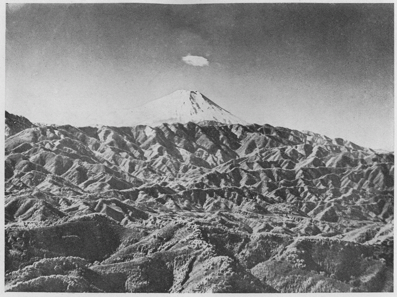

この一篇は昭和三年六月十日、霧の旅会創立第十周年紀念大会の席上で述べた話の原稿を纏めて、改訂増補したものであるが、もとより未定稿であって、ほんの一寸 した思い付を述べたに過ぎない、謂 わば夢物語に似たようなものであるから、予 め左様御承知を願って置きたい。尚お南洋系語は主として文学博士坪井九馬三氏の『倭人考』に拠 り、仏蘭西極東学校出版の『チアム仏語辞典』『マレイ英語辞典』『馬日辞典』等を参照した。又 アイヌ語はバチェラー氏の『アイヌ語辞典』に拠ったものである。其 他に朝鮮総督府編の『朝鮮語辞典』、ルザック出版、東洋宗教叢書中の『印度神話』、ジャンネラー・ド・ベールスキー氏の『アングコル』『太洋洲諸島民族志』等をも参酌した。
我国の山名に就て考えるならば、先ず（一）形によるもの（槍ヶ岳、乗鞍岳、笠ヶ岳、荒船山、鶏冠山等）、（二）形以外の見かけによるもの（赤岳、黒岳、白崩山、黒髪山、青薙山、毛無山等）、などから、（三）地名に基くもの（武甲山、刈田岳、鹿留山、小野子山、筑波山）、（四）沢の名を冠するもの（赤石岳、荒川岳、
次に述べるところのものは、こう説いても解釈の一になるのではないかと、私の試みた山名考の中から、
富士山の名は今では我国に来遊する外国人で知らぬ者もない程に有名になったが、国内に於ても昔から厚く尊崇されていたことは、かの山部宿禰赤人の
天地の 分れし時ゆ 神 さびて 高く貴き 駿河なる 布士 の高嶺を 天の原 ふり放 け見れば 渡る日の 影も隠ろひ 照る月の 光も見えず 白雲も い行き憚り 時じくぞ 雪は降りける 語り継ぎ 言ひ継ぎ行かむ 不尽の高嶺は
や、同じく高橋連虫麻呂の詠める歌、
なまよみの 甲斐の国 打ち寄する 駿河の国と こちごちの 国のみ中ゆ 出で立てる 不尽の高嶺は 天雲 も い行き憚り 飛ぶ鳥も 翔 びも上 らず 燃ゆる火を 雪もて消ち 降る雪を 火もて消ちつゝ 言ひもかね 名づけも知らに 霊 しくも 座す神かも 石花海 と 名づけてあるも その山の 包める海ぞ 不尽河と 人の渡るも その山の 水のたぎちぞ 日本 の やまとの国の 鎮 とも 座す神かも 宝とも なれる山かも 駿河なる 不尽の高峰は 見れど飽かぬかも
などによっても知ることを得るのである。これらの歌を見ると、単に外部に
富士山者、在駿河国、峰如削成、直聳属天、其高不可測、歴覧史籍所記、未有高於此山者也。
といい、又
其聳峰鬱起、見在天際、臨瞰海中、観其霊基所盤連、亙数千里間、行旅之人、経歴数日、乃過其下、去之顧望猶在山下、蓋神仙之所遊萃也。
といえるは、富士山の崇高雄大なることを説いたものであるが、更に
又貞観十七年十一月五日、吏民仍旧致祭、日加午、天甚美晴、仰観山峰、有白衣美女二人、双舞山巓上、去巓一尺余、土人共見、古老伝云、山名富士取郡名也。山有神 名浅間大神。
といえる記事は、即ち
富士山は
維新後になって、人類学、考古学、言語学などの研究が始められ、
坪井正五郎、志賀重昂、久保天随の博士学士を始め、アイヌ語に精通せりといふバチエラー氏までが、異口同音にフチは火の義であり、富士山は火山である為に其名を得たと唱道するのは甚しき杜撰の説で、迂闊極まるには驚かざるを得ない。フヂは明にアイヌ語ではあるが、それは雪白の髪を被った老婆の意である、例へば火の神はアベ・カムイといふ可きであるが、土人はさうはいはないで之をアベ・フチといふてゐる、つまり火のお婆さんといふことで、多大の愛敬の意を含む言葉である、丁度千古の雪を戴いた八面玲瓏の富士山の姿がアイヌ達の白髪を被ったお婆さんと似てゐるので、此名山を呼ぶにフチを以てするに至つたことは、一点の疑ふ可き余地がない。
と云う説を発表している。此説によると、アイヌ語の火はアベであってフチではない。だからアベ・フチが略されてフチとなったとしても、眼目はアベではなくフチの方であるから、之を高橋虫麻呂がよんだ
不尽の嶺に零り置ける雪は六月の
十五日 に消 ぬればその夜降りけり
という歌のように、雪を主とした側から見れば面白い説明であって、一説として傾聴する価値はあるように思われる。
然しながら、火を親しんで「火のお婆さん」と呼ぶことは、日常取扱われる火であるなら格別、荒ぶる火の山に対して、古代の人がそういう感情を抱いていたかどうか頗る疑わしいもので、寧ろ惶み恐みて崇め尊んでいたと考える方が
 pui）、アフィ（Afi）アプェイ（Apuei）などと多少の相違はあるが南洋系の言葉で、現に
pui）、アフィ（Afi）アプェイ（Apuei）などと多少の相違はあるが南洋系の言葉で、現に栗田寛氏は『常陸国風土記』に、
福慈はフクジと字のまゝに読む可し。寛按にフは火にてクジは奇なり、富士の山は火山なる故に云へり、高千穂をば 日
日
日というている。然しこれは福慈の解釈であって富士の解釈ではないが、頗る原義に近い説である。
さて富士の語原はこれで判明したが、富士山に祭ってある神を何故に浅間と呼ぶのか、之がまた私には不可解の謎であった。古人も富士と浅間と一体なることを意識していたことは確かであるが、浅間の由来に就ては富士と同様少しも知る所がない。それが図らずも前に引用した「外人の東京観」の中で造作もなく説明されているのである。今其の大意を抄出すると、
日本の高山の名を考へるならば、火山であつたかと思はれる様に「煙」といふ意義のある馬来語のアサッ（Asap）を冠してゐる山の名が多い、浅間山がそれであり阿蘇山がそれである、富士山に祭つてある浅間も又それに相違なく、即ち富士は「アサマの神の坐ます白い山」に外ならない。足柄山のアシはアサで、ガラは馬来語で荒れるといふ意味だから、「煙で荒れる山」であつて、富士の噴火の為に灰や煙で荒されてゐた為であらうし、日光山をフタアラ山と云ふのはプトガラの転訛で、「白い山で荒れる」事を言ひ表はしたものと思はれる、其他浅間温泉や浅虫温泉も亦煙から導かれたものであらう。
というのである。其の全文は『山岳』第二年第三号の雑録欄に転載してあるから就て参照されたい。
今でこそ日本語は、主として南洋系のモン・クメール語やチアム語の単語を北方派のツングース系の文法で統一したものであるといわれているものの、明治四十年頃に日本語を南洋系の言葉で解釈しようと試みる人などは、皆無でないまでも極めて稀であったに相違ないから、此の新聞の記事は後日南洋系の言語を研究するに至った機運を作る上に一条の導火線となったかも知れないのである。尤も馬来語が直接日本語となったものは、
 ruh）即ち雑居人の意から出たもので、アイヌ人を指して呼んだ言葉であろうと云う。そしてアイヌよりも優勢であった南洋系の言葉が神の名となり、アイヌ語は単に山の名として残ったものであろう。其のアサマに浅間の二字が当てられ、いつしかセンゲンと音読されて、ここに富士浅間大明神又は大菩薩となったものである。
ruh）即ち雑居人の意から出たもので、アイヌ人を指して呼んだ言葉であろうと云う。そしてアイヌよりも優勢であった南洋系の言葉が神の名となり、アイヌ語は単に山の名として残ったものであろう。其のアサマに浅間の二字が当てられ、いつしかセンゲンと音読されて、ここに富士浅間大明神又は大菩薩となったものである。
●景信山より見たる富士山
そして各地に存在する何々富士と呼ぶ山、例せば薩摩富士（
戸無き八尋殿 を作りて其の殿の内に入り、土を以て塗り塞ぎ、御子達を産みます時に其の殿に火をつけ、其の火の盛に燃ゆる時に生れました御子の名は火照命 、次に生れましたのが火須勢理命 、其の次に生れましたのが、火遠理命 、亦の名は彦火火出見命 であつた。
と記してあり、『日本書紀』の伝えも
四月廿日あまりの比駿河富士の社にこもりて侍けるに、桜花さかりにみえければよみ侍ける
法印隆弁
富士のねは開ける花のならひにて
猶時しらぬ山さくらかな
猶時しらぬ山さくらかな
とあるのは、此間の消息を語っているものであろう。
近頃になって富士の語原を、同じくアイヌ語ではあるがフチ又はフジではなくして、プシであると説く人もある。プシは破烈する又は噴火するの意があるから、噴火山である富士にふさわしい言葉であるといえる。現に北海道の地名にも用いられているが、オプシナイ、シュムプシ、モプシ、メナシプシと云うように多く川の名に用いられているのみで、山名には見当らぬようである、尤も詳細に調べたならば或は発見するかも知れない。樽前山の北にフップシヌプリという山があるけれども、之は噴火には関係なく、トドマツある山の意である。
又阿蘇
御岳は各地に多い山名の一であるが、普通にはミタケと読み、オンタケと呼ぶのは木曾の御岳位のもので、他に
御岳の祭神は判然しない。私は未だ見たことはないが、『御岳神社由来記』という本があって、
神祠（御岳権現祠）乃祀二御岳一也、俗謂二之里宮一、有二本社若宮二祀一、古称二安気大菩薩一、伝云延長三年鎮座。云々。
とあり、これで見ると御岳神祠は山そのものを祀ったものであることは明かであるけれども、安気大菩薩とは如何なる神か仏かまだ判明しない。
延長三年の鎮座とすれば宝亀六年より
木曾黒沢大菩薩若宮殿鰐口也
至徳二年乙丑六月十三日
信州木曾黒沢菩薩鰐口也
天文二十三年甲寅六月十五日
至徳二年乙丑六月十三日
大檀那 伊予守家信
信州木曾黒沢菩薩鰐口也
天文二十三年甲寅六月十五日
大檀那 木曾義在
同 嫡子義康
神主 太四郎久次
『由来記』は又、御岳祠に専任の神職がない為に、神への勤めが疎略になることを深く憂いて、木曾伊予守家村が諏訪神社の神職に懇請し、下社の武居大祝重家の二子重晴を黒沢に移住せしめて神職としたと説いているが、『諏訪旧跡志』には
夫信州木曾御岳山禰宜職者、重々由来因レ有レ之、諏訪下之社武居大祝宮内大輔重家定二此之禰宜職一処也、則同名以二武居宮内少輔重晴一任二禰宜職一、為二後々末代一此一書為二証文一、依而如レ件。
徳治二丁未六月十三日（後二条天皇 六百二十一年前）
とあって家村の懇請というよりも、何か特別の関係で重晴が神職となったものらしい。勿論この文書も疑わしい点はあるが、暫く
御岳を祀った宮は黒沢のみであったことは、『吉蘇志略』に
〔御岳〕是信濃一州大山也、西野、末川、黒沢、王滝等諸村皆其麓也、然黒沢独奉祀。云云。
とあるので明かである。然し上島の岩戸権現は御岳の別宮であると伝えられ、黒沢と同じく毎年六月十三日に諸人御岳に登る時、祠宮が前導するのを例としていたというから、王滝からも細径の通じていたことは疑いない。昔は登山も厳重で、百日の精進をなし、六月十二日の夜から十三日にかけて登山したもので、『集古文書』の木曾長政の願文が之を証している。其時姓名を木牌に書いたものが黒沢口の里宮の宝物になっているとは『吉蘇志略』の説く所である。
木曾長政願文 集古文書巻四十七
御岳為精進当郷百日在郷諸願成就皆令満足候事也
為後日一筆如件。
為後日一筆如件。
于時永録三年庚申林鐘（六月）十三日
源朝臣木曾 長政 判
御伴之人数
上松彦十郎 旧里熊蔵
千村鶴若 原新次郎
原右京亮
千村幸七 強力 弥三郎
原惣八左衛門尉 白衣 八郎左衛門
旧里主水丞 馬飼 源五郎
永録は永禄で、三年と云えば桶狭間合戦の翌年である。これで見ても御岳登山の古いことは知れよう。けれども御岳登山の盛になったのは、天明五年に尾張国春日井郡の覚明行者が藪原の杣長九郎等十三人の労力奉仕に依りて黒沢口を改修し、寛政四年に武蔵国埼玉郡の
白山は越のシラヤマと呼ばれていた。ハクサンと音読されるようになったのは後のことである。それがシラヤマと呼ばれた訳は、誰も知っての通り冬季降雪量多く、従って夏も多量の残雪を有する為である。治部卿通俊の
おしなへて山の白雪積れとも
しろきは越の白根なりけり
しろきは越の白根なりけり
は、此間の消息を歌ったもので、
消えはつる時しなけれは越路なる
白山の名は雪にそありける
白山の名は雪にそありける
とあるは、白山の名の由来を語るものであろう。
白山は只一峰にて根張りも大に、殊に雪四時ありて白玉を削れるが如く、見るより目覚る心地す。
と道破した如く、富士山程でなくともどちらかといえば秀麗な山である、太古の住民が
 が
が白山と並んで越の名山である立山は、古くはタチヤマと呼ばれていた。万葉の詩人大伴家持は、聖武天皇の天平十八年七月越中の国守となって赴任し、三年目の天平二十年四月二十七日に
天離る 鄙に名懸かす 越の中 国内ことごと 山はしも 繁 にあれども 川はしも 多 に逝けども 皇神の 主宰 き坐す 新河の その立山に 常夏に 雪降り敷きて 帯ばせる 可多加比河の 清き瀬に 朝夕ごとに 立つ霧の 思ひ過ぎめや 在り通ひ いや毎年 に 外のみも ふり放け見つゝ 万代の 語ひ草と 未だ見ぬ 人にも告げむ 音のみも 名のみも聞きて 羨 しぶるがね
の歌があり、翌二十八日に大伴池主が
朝日さし 背向 に見ゆる 神ながら 御名に負はせる 天そそり 高き立山 冬夏と 分くこともなく 白妙に 雪は降り置きて 古ゆ 在り来にければ 凝 しかも 巌の神さび たまきはる 幾代経にけむ 立ちてゐて 見れども奇し 峰高み 谷を深みと 落ち激 つ 清き河内に 朝去らず 霧立ち渡り 夕されば 雲居棚引き 雲居なす 心も萎 ぬに 立つ霧の 思ひ過さず 行く水の 音も清けく 万代に 言ひ続ぎ行かむ 河し絶えずは
と歌っている。
タチは倭人と同族であるサカイ族の語で、立チ上ル
神と崇めたのと好個の対照と云うべきであろう。祭神にしても白山の菊理姫命に対して、これは
先ず羽前羽後の古名である出羽に就て一考する必要がある。出羽は古くはイデハと呼ばれたのが、後にデハとなったのである。元明天皇の和銅五年（一二一六年前）始めて出羽国が置かれ、それ迄は出羽郡であった。イデハの名義に就ては『地理志料』に
按、神学類聚抄引二風土記一 本州上古貢二鷲之羽一用為二箭羽一 故名二出羽国一。
とあって、鷲の羽を産出したことが郡名の起りであるとされている。勿論鷲の羽の出たことは
イデハという地名の地元は何処であったかといえば、それは
 波神社の所在地である庄内平野であろう。イデハのイデは南洋系語のデハヅレの意であるウチ又はイチの転訛したもので、ハはナニハ（難波）のハと同じく平野を意味するチアム語であると思う。そうすればイチハ即ちデハヅレの平野ということになる。
波神社の所在地である庄内平野であろう。イデハのイデは南洋系語のデハヅレの意であるウチ又はイチの転訛したもので、ハはナニハ（難波）のハと同じく平野を意味するチアム語であると思う。そうすればイチハ即ちデハヅレの平野ということになる。此平野の南部を南北に貫流して酒田附近で
一、遠賀神社
小寺信正いふ、遠賀神社鶴岡城南稲荷村有、近頃迄土俗稲荷大明神の社なりといふ、近年改め称す、或日遠賀と稲荷と訓通し近き故転訛有之にやと云々。
予詣て社地を見るに式内の社には不相応の地にして尤も遺憾たり、古社地淀河組の内あり。
小寺信正いふ、遠賀神社鶴岡城南稲荷村有、近頃迄土俗稲荷大明神の社なりといふ、近年改め称す、或日遠賀と稲荷と訓通し近き故転訛有之にやと云々。
予詣て社地を見るに式内の社には不相応の地にして尤も遺憾たり、古社地淀河組の内あり。
とありて、推察に違わぬことを喜んだが、『風土略記』の著者が式内の社には社地が不相応であるのを遺憾とし、古社地を淀河組の内にありとしたのは、私にいわせるとそれこそ遺憾であった。淀河組の社というのは、鶴岡市の西南一里
神、雅（稚の 神の五神となっているから、寧ろ
神の五神となっているから、寧ろ又鶴岡の西方海岸に加茂町がある、これは小さな港であるが小舟の碇泊には便利である。今此町には加茂の神の社はないが、昔は
 n）の転訛で、地方長官というような意味であるという。東京湾の横須賀附近や木更津附近にもフクラと云う古名があった。庄内平野の北端吹浦川の河口にある吹浦もこれと同じ言葉であろうと思う。
n）の転訛で、地方長官というような意味であるという。東京湾の横須賀附近や木更津附近にもフクラと云う古名があった。庄内平野の北端吹浦川の河口にある吹浦もこれと同じ言葉であろうと思う。これだけ調べて置いて、さて如何なる民族が此等の地名を残したかといえば、此地方に多かったアイヌ即ち蝦夷人でなかった事は確である。私は之を日本原始民族の一であるチアム民族であったと考える。これはマラヨ・ポリネシヤ系の民族で、フィリッピン諸島の民族と同系に属するものである。この民族は出雲に植民していたのが、出雲派のツングース系民族に圧迫されて次第に北に移り、遂に加茂に上陸してここに稲圃の神を祭り、庄内平野をイチハと呼び、前途を祝して此平野を神と崇めたのがイチハノ神後の伊
波神社である。又穀物の神倉稲魂神を赤川の畔に祀り、更にこの平野の東南にゆったりと聳えている月山を対象として、最も尊崇している農業の神月読尊を祀り、月山と相対して平野の東北に煙を吐いて月山は月読尊を祭った為の名であるが、鳥海山の名は古書に見えず、
奉懸鳥海山和仁口一口
右意趣者萩原守重息災延命
加右故
右意趣者萩原守重息災延命
加右故
暦応五年壬午七月廿六日 白
とあり、『風土略記』には
大物忌の神山を土俗北の山といふ。鳥海山以前の号にや。
と記し、又
庄内村々夏月参詣の為に講を結び御北講といふ。
とあるのみである。暦応は北朝の年号で、その五年は後村上天皇の興国三年に当り、四月二十八日に康永と改元されている。
羽黒山は庄内平野の東を限る丘陵の最高所を占め、
波神社であるから、前に波神社に詣ずる人が多くなるに連れて、祭神もいつしか倉稲魂神となり、イチハノ神は忘られ、唯社名に存するのみとなったものではあるまいか。大物忌神社の祭神までが同じく倉稲魂神と変ったのも、一方に於ては平野の開拓が次第に然るに中古修験道の勃興と共に、ここでも早く熊野に擬して、羽黒月山湯殿を三所権現と唱え、羽黒を熊野に比し、之より入るを本道とし、湯殿を吉野に比し、之より入るを逆入りというた。それが頗る盛大に赴いたので羽黒山伏の名は山伏仲間に幅を利かすようになったのである。そして山を羽黒と称するに至った
磐梯山は古名を
己酉。加二陸奥国石椅神従四位下一
とあるものがそれである。『延喜式』には
※［＃「王＋耶」、U+7458、223-11］磨郡一座小
磐椅神社
磐椅神社
とあり。※［＃「王＋耶」、U+7458、224-2］磨は今は耶麻と書いている。そのヤマなる郡名の起ったのも
奉懸岩椅大明神 本地御正体一面
右志趣者為心中祈願成就円満乃至法界平等利益所奉□□如件
右志趣者為心中祈願成就円満乃至法界平等利益所奉□□如件
永仁三年閏二月十八日 藤原氏女 敬白
と記されている。欠字は「依而」の二字であろうか。永仁は伏見天皇の年号であるから、今より六百三十四年前のものである。
ハシは元来舟のことで、フネは容器をいう意味であったことは、湯フネ・酒フネ
石鎚山は一に伊予の高嶺ともいい、磐梯山と同じように古名はイハツチであって、頂上にイハツチの神が祀ってあるからの名である。『日本霊異記』巻下には
伊与国神野郡郷内有レ山名号二石鎚山一是即彼山有二石槌神一之名也其山高※［＃「山＋卒」、U+5D2A、225-11］而凡夫不レ得二登到一仕二浄行一人耳登到而居住。
とし、
故老相伝、伊予国神野郡、昔有二高僧名灼然一、称為二聖人一、有二弟子名上仙一、住二止山頂一、精進練行過二於灼然一、諸鬼神等皆随二頤指一。
とありて、
イハツチのツチはツツと同じく南洋系語のチュチ（
u i）で長老を意味し、転じて首長とか頭目とかいうことに用いられ、イカツチ（雷）カグツチ（火の神）タケミカツチ（武甕槌）シホツチ（船長）ナツチ（地酋）等が其の例である。岩山の魁たるものという意味でイハツチと呼ばれた、それは勿論頂上附近の露岩から導かれたものに相違ないであろう。
i）で長老を意味し、転じて首長とか頭目とかいうことに用いられ、イカツチ（雷）カグツチ（火の神）タケミカツチ（武甕槌）シホツチ（船長）ナツチ（地酋）等が其の例である。岩山の魁たるものという意味でイハツチと呼ばれた、それは勿論頂上附近の露岩から導かれたものに相違ないであろう。筑波山は関東の名山である、恐らく東国の人で
衣手 常陸の国 二並 ぶ 筑波の山を 見まくほり 君来ましぬと 熱けくに 汗かきなげ 木の根取り うそむき登り 岑 の上を 君に見すれば 男の神も 許し給ひ 女の神も 幸 ひ給ひて 時となく 雲ゐ雨ふる 筑波嶺を さやに照して いぶかしき 国のまほらを つばらかに 示したまへば うれしみと 紐の緒ときて 家のごと 解けてぞ遊ぶ うち靡く 春見ましゆは 夏草の 茂くはあれど 今日の楽 しさ
というので、筑波の双峰が早くから男神女神として崇められていたことが分る。各地にある二上山というのも二神山であって、二峰相並んで聳立していることを示す。
筑波の起源に就ては二、三の異説がある。ツクハはツクマ（佃間）の転で、早くから此地方に移住した高天原民族の一派が蝦夷を駆逐して次第に領域を広め、鬼怒川（今の小貝川）流域にツクマを設けて米作を興した。そのツクマがツクバとなり、地名から終に山名となったのであるというのが一説で、
一体常陸の国殊に筑波山を中心とする山地には、南洋系民族に関係ある地名や信仰の遺蹟と思われるものが少くない、彼等は何処から入国したものであろうか。東京湾から其
『常陸国風土記』を見ると、茨城郡の条に
従レ郡西南近有三河間謂二信筑之川一、源出レ自二筑波之山一、従レ西流レ東、経二歴郡中一入二高浜之海一。
という記事がある。今は郡名は新治、川は恋瀬となっている。けれども川の中流右岸に、
草枕 旅の憂を 慰もる 事もあらむと 筑波嶺に 登りて見れば 尾花ちる 師付の田井に 雁がねも 寒く来鳴きぬ 新治の 鳥羽の淡海も 秋風に 白浪立ちぬ 筑波嶺の よけくを見れば 長き日に 念ひつみ来し 憂は息 みぬ
として取入れられて居る。それならなぜさして景勝の地でもないこの里が
シツクという地名は他に淡路、長門、備中、美濃等の諸国にあるけれども、同意語のツクシ即ち九州が本元であったろうといわれている。チアム語シ（Si）は尊称で、ツク（Tuk）は月をいい、シック即ち月の神である。印度では月は太古から農業の神として厚く尊崇され、同じく熱帯の住民であったチアム民族も之を受け継いで来住したものであろう。
両神山には八日見山の異名があり、
両神明神社 小社ニテ東向、薄白井指両村ノ鎮守トス。所祭伊弉諾伊弉冉尊云々。例祭四月八日、九月十九日。別当観蔵院麓ノ大谷ニ住ス。当山修験、上州緑野郡安中宿天照寺配下。
両神権現社 明神社ヨリ少シ小サク又新ラシク見ユ、明神社後ロニアリテ南向ナリ。コレ又前ニ同ク両村ノ鎮守ニテ所祭二尊ナリ云々。例祭前ニ同ジ。別当金剛院小名浦嶋ニ住メリ。本山修験、入間郡越生郷山本坊配下ナリ。
とあって房吉の話とは多少相違している。
八日見山 村ノ西南ニアリ、登り五十八町、嶮岨ノ高山ナリ。山上ニ竜神大明神社ヲ勧請ス、村中ノ鎮守ニテ例祭九月初子ノ日。神職高野伊賀、吉田家ノ配下ナリ。此神職ヨリ火盗除ノ守護札ヲ出セリ云々。扨此山ハ当村ト薄村ノ両村ニ跨リ、薄村ニテモ山上ニ両神権現両神明神ノ二社ヲ祭レリ。当村ニテハ八日見山ト唱ヘ、又竜神社ヲ祭レル故ニヤ竜神山トモ唱フ、薄村ニテハ両神山ト唱フ、皆文字異ニシテ唱ヘハ同シ。
『風土記稿』の編者は、祭神に就て単に竜神大明神又は竜神社とのみ記して、其所に抄録してある縁起に竜頭大明神と書いてあることに気が付かなかったか、或は気が付いても意味が分らなかった為か、肝心な頭の一字を脱してしまった。これは重要なことであるが、それに就ては後に述べることにする。房吉の話では絶頂から北に下ると竜頭山というのがあってリユウガミ山と称するとのことであった。それは正しく河原沢村の竜頭大明神を祭ってある地点を称したものに相違あるまい。けれども
この竜頭という山名を記載した地図を私は見たことがなかったが、本会の記念大会に陳列された吉田君の出品に係る多くの武蔵図の中に一葉を発見したのは珍らしかった、但し著者及出版の年月日を写し取った紙片を紛失してしまったので、ここに紹介することを得ないが、酒井彪三編輯、明治十年八月出版の『大日本一統輿地分国図』の中なる「武蔵」の図にも、八日見山との関係的位置は、甚しく隔絶しているが、
竜神と云う山の名は各地にあって、中には仏教渡来後に竜神を祭った為にそう呼ばれるようになったものもあろうが、周囲の地名などから推して、原始から引続いた信仰に基くものが多いことも疑う余地がない。近い所では常陸の国府であった石岡町の西北一里許りの地にある竜神山などは其の著しき例である。然し同じ竜神を祭った山でも、八日見又は夫に近い発音を有するものは、他に少しも聞く所がないのである。
八日見という山名の起原に就ては、河原沢村の所伝に従えば
八日見山ト申ハ、日本武尊東夷征伐ノ時、東国ノ海陸御巡幸有テ、夷賊追伐ノ御祈トシテ筑波山ニ登ラセタマヒ、遥ニ御覧アツテ、衆山相連ナレル中ニ殊ニ秀タル瞼山戌亥ニ当テ有リ、八日以来、見ヘタリト宣シヨリ、山ノ名ヲ八日見山ト名付ケ給フトナリ。
とあり、薄村では
両神山 伊弉諾伊弉冉尊二神ヲ祭レバコノ名アリ、一ニ八日見山トモ書セリ。土人ノ伝ヘニ往古日本武尊東夷征伐ノ時コノ郡中ニカカリ、此ノ山ヲ見給ヒテ通行セシメタマフコト八日ニ及ベルヨシ、故ニ名ツクト云。
ということであって、所伝に多少の相違はあるが、八日の間見えていた為に八日見山と名付けたという点は両者一致している。これはこの山の名が古くはヤウカミと呼ばれていた証拠である。いや、そのヤウカミという名も原始のままでないことは明かであるが、最も本来の呼び名に近いものであると信ずる。然らばこの名の基く所は何であるかといえば、疑いもなくそれはオガミから導かれたもので、

『古事記』の所伝に拠れば、伊弉冉尊は神迦具土をお生みになって、それが為に神避り坐した。是に於て伊弉諾尊は
神が火神の子であることは孰れも一致している。そして雷と大蛇と山の神とは同じものであると信じられていたことは、『日本書紀』の雄略天皇七年秋七月の少子部連螺羸の記事や、『日本霊異記』の得二雷之喜一令レ生レ子強力子縁の話や、三輪山伝説などが之を証明している、これは注意を要することである。坪井文学博士の所説に従えば、闇は蛇を意味するチアム語のクラン（Klan）より出で、梵語では之をナガラジヤ（Naga-raja）と呼び、訳して竜王という。クメール語ではナクラチ（Nakra）と訛っている。オガミは同じくクメール語のカム（Kham）にポリネシヤ語の持格の前置詞オを副えたものであろうということである、カムは国語の噛ムである。するとクラ、ナガ及オガミの三者は共に※［＃「虫＋（冂＜はみ出た横棒二本）」、U+86A6、236-7］蛇即ち竜神を意味する言葉である。ヲロチは同じく蛇の尊称であるチアム語のアラーチェイ（Alaei）がヲロチとなって残ったともいえるし、又国語では、霊妙な感じを起させるものを古代人はチと呼んでいた。血、乳、口などがそれである。蛇も亦チといわれ、水に住んでいるのがミヅチ、山に住んでいるのがヲロチ（ヲは峰なり口は助辞）であるともいえる。太古日本原住民族の一に自ら
モン・クメールは※［＃「虫＋（冂＜はみ出た横棒二本）」、U+86A6、237-9］蛇崇拝の民族であって、主神としてナクラチ（竜王）を祠っているが、それは単躯七頭の形で現わされている。印度の神話に従えば、ナガは三頭或は七頭又は十頭を有する。クメール民族は其中の七頭のものを主神と崇めたのである。日本では八頭又は九頭として伝えられている。出雲の簸ノ川上で素盞嗚尊に退治された八岐の
若しくは九頭竜権現がそれである。ギリシャの神話を読むと、ヘラクレスがレルナの沼で一身九頭の水蛇を退治したことが書いてあるが、これはクメールの原始信仰と同じものが西に伝ったのであろう。『古事記』や『日本書紀』の記事によると、八岐のは胴体が一で頭が八、尾が八あったという。この記事は適切な幾つかの説明が下されているが、場所が出雲地方で、後になってチアム民族や出雲派ツングース民族などの移住地となった関係上、このような神話が生れたので、つまり八岐のを主神とする民族が素盞嗚尊を主神とする民族に圧服されたことを語るものではあるまいか。大蛇退治の神話は出雲以外には無いけれども、竜王即ち
神を祭った社は各地にある。尤も後世になって竜王信仰の衰えと共に祭神の変ったものもあるであろうから、それらをも合せたならば全国では神、高神、闇罔象の三神とも、迦具土ノ神から生れた雨神に外ならぬ。『万葉集』巻二に天武天皇から藤原夫人に賜うた御歌
わが里に大雪ふれり大原のふりにし里に降らまくはのち
といえるに、藤原夫人の和し奉りたる
わが岡の神に言ひて降らしめし雪の摧 し其処に散りけむ
神に言ひて降らしめし雪のという歌などは、
神が雨神であった証拠と又其信仰の名残とを九州方面から瀬戸内海を東進して来たモン・クメールは、紀ノ川を遡りて五条町附近の別天地に居を占めたであろうが、後に渡来した川下の住民から次第に圧迫を受けたり、又は生活上にも都合のよい山地を求めたりして、尚も川上深く隠れたのが『書紀』の応神天皇の巻に載せられた
夫国樔者、其為レ人甚淳朴也、毎取二山菓一食、亦煮二蝦蟆一為二上味一、名曰二毛瀰一。
で、其一派が黒滝川即ち丹生川を溯りて丹生に大蛇崇拝の跡を止めたのであろう。『延喜式』には河内国茨田郡意賀美ノ神社、和泉国和泉郡意賀美ノ神社、同国日根郡意賀美ノ神社を載せてあるので、和泉河内の山地には濃厚なる大蛇崇拝の痕を止めていると言える。
さて瀬戸内海から河内和泉の海岸に舟がかりしたモン・クメール民族は、一派は
竜神社 除地。同じ辺（○北谷）山ノ中腹ニアリ、小社ナリ。伝ヘ云、社地ノ樹木ニ手ヲ触レバ必ズ神罰アリトテ、里人等恐レテ伐リトルコトヲ得ズト。村持。
となっている。之に関聯して南洋臭く思われるのは、其北隣りの金沢村大字富岡に在る芋明神社で、次の如く記載されている。
芋明神社 小名板橋ニアリ疱瘡神ナリ。疱瘡ヲイモト訓ルヨリ仮借シテ芋明神ト書スルナルベシ。寛永中村内慶珊寺ニ仕ヘシ茂右衛門、寺辺ニテ丈二間許ナル蛇ヲ打殺セリ、寺ノ住僧伝雅之ヲ憐ミテ経文ヲ授ケ門外ニ埋ム。其夜蛇ノ霊童子トナリ伝雅ノ夢ニ入テ告グ、経文ノ功徳ニヨリテ天ニ生ズル事ヲ得タリ、今ヨリ世ニ疱瘡ヲ患フルモノヲ守護スヘシ、此上ノ芳志ニ我為ニー社ヲ造営シテ与ヘヨトミテ夢覚メタリ。明朝枕元ニ蛇ノ脱皮アリシヲ見テ奇異ノ思ヲナシ、即チー社ヲ造立シ疱瘡神ト崇メ、本地仏ヲ楊柳観音トス、云々。
霊芋 社前ノ池中ニアリ。池ハ僅ニ一間四方、中央ノ小嶼ニ柳一株タテリ。其水中ニ生ジ、形状ハ白芋（俗ニ蓮芋トイフ）ニ似タレド四時枯レズ。コレ神号ニヨリテ芋ヲ植シモノニヤ。此芋ヲ折トリナドスルモノアレバ立所ニ祟アリ。疱瘡ヲ病ムモノ、池水ヲ飲シメ祈レバ必恙ナシトイヘリ。
芋明神というので殊更に芋を植えたもののように『風土記稿』の編者は想像しているが、これは勿論芋を崇めた社に相違ない。芋は南洋系民族の常食としているもので、池中に生じて居る所から推すと、今も大洋洲諸島の民族に大切の食糧であるタロ芋であったかも知れない。疱瘡の神と間違えられたのは飛んだ御愛嬌であるが、蛇の脱け殻で撫でると疱瘡が軽く済むというような土俗の信仰が起ったので、蛇を殺して夢枕に立たせる必要を感ずるに至ったのであろう。
東京湾沿岸から武蔵野の森林地帯を住所としていたモン・クメールは、チアムとは違って農業を主とした民族ではないから、次第に生活に都合のよい山地を目指して奥の方へと進み、荒川に沿うて秩父盆地に入ったらしい。荒川本流の沿岸には未だそれらしい地名を発見せぬが、赤平川の沿岸は下吉田附近を中心として、※［＃「虫＋（冂＜はみ出た横棒二本）」、U+86A6、243-7］蛇の気が濃厚に漂うている。大淵で荒川本流と別れ、赤平川に沿うて進むと久長があり、下吉田には椋神社があり、其南には奈倉があり、更に其の南には長留がある。又薄川と小森川との合流点にある長又は、通常ならば川又と呼ばれる所であろう。薄川の上流には小倉という小名があり、小森川の上流には穴倉という小名もある。此等の中で特に注意すべきは奈倉と長留とで、前者はナクラチ、後者はナガラジヤの略されたものと思われる。尚此附近には変った読みくせを持つ地名が多くあるけれども、私には未だ解釈の道がない。
下吉田の椋神社は、秩父郡に二座しかない延喜式内の神社の一で、縁起には猿田彦命を祭り、其出現は、日本武尊東夷征伐の時、此国を巡狩して山路に矛を
以上は恐らく冗長に過ぎて読者の厭倦を来した事と思うが、此等の事実によりて、秩父の奥の山地に
神の祭られた社の存在するのも、決して怪しむに足らぬということが了解された事と信ずる。そこでいよいよ話を本題の山名に戻して、ヤウカミの説明に取り懸ることにする。此山が
神に関係あることは前述の通りであるから、ヤウカミはヤオガミの音便であってヤは数字の八であろう。河原沢村の縁起によれば、
竜頭大明神ハ諸難諸病ヲ悉除シ給ヒ、眷属ニ仰セテ火災盗賊ノ難ヲ除キ、田畑諸作ヲ荒ス猪鹿野狐等ノ悪畜ヲ退散シ、万民ノ患ヲ防タマフト云々。
竜頭と書いてあることは肝要な点で、私はそれを単躯八頭の
神即ち即ち八岐のなるが故にヤオガミと唱えたものと推定する。或はヤはヤヲヤのヤと同じく単に頭の数の多いことを意味するものとしても差支ないが、ここでは数の八とするの直截簡明なるに如かない。
サテ此山ノ神ノ眷属ト称シテ盗賊火難除ノタメ、山犬ヲ貸シ出セルコト三峰山ナトノコトクニテ、却テ三峰山ヨリモ古ク貸シ出セルヨリ、此犬ヲ借リルモノ近国及ビ諸郡ノ人々年分引モタヘズ、詣テ来リテ乞ヒ求ルニ銭帛ヲ納メ守護札ヲ受テ帰レリ、両別当ヨリ指出セル守札少ナカラネバ、其ノ益アルコト知ンヌベシ。
とあって、
『日本書紀』の「崇峻紀」には、
壊二飛鳥衣縫造祖樹葉 之家一始作二法興寺一、此地名二飛鳥真神原一、亦名飛鳥苫田。
という記事があり、「採輯諸国風土記」の大和の部には、
昔明日香地有二老狼一、土人謂二之大口神一、故其地名二大口真神原一。
とありて、真神原と呼ばれる
神に縁のあることを示している。或種の動物が或神の使者であるという思想は、我国では上古に始ったものらしく、『古事記』に、日本武尊が伊吹山に登るとき白猪に逢い、「是の白き猪に化れる者は其神の使者にこそあらめ」と大犬さまのお守を出す所は、両神神社及び三峰神社の外に、美濃国不破郡の南宮神社と遠江国周智郡の山住神社とがある。南宮神社は金山彦命を祭神とする国幣大社であるが、古名仲山金山彦神とあるので竜神に関係あること疑ないのみならず、祭神五座の中に闇罔象女神があり今も摂社に闇
と高が祭ってある所から推して、元来神信仰の社であったかと思われるのである。山住神社は周智郡の山奥に在り、祭神大山祗命となっている。私はこの神社の縁起に就て少しも知る所がないから、お犬さまとの関係を知ることを得ないのは遺憾であるが、天竜川はクメール民族と浅からぬ関係があるので、これは闇神と同じく迦具土の血から生まれた大蛇闇山祗を崇めたものであると信ずる。説いてここに至れば、読者は既に思い附かれた事と思うが、三峰神社のお犬も其御利益は全く両神神社のものと同様であって、両者の起源の同じき事を示している。従って逆に古い三峰神社の祭神はオガミであったことが推定されるのである。縁起に拠ると三峰神社の起源は明瞭でない。神仏分離史料に拠ると、文亀の頃に月観道満なる人が頽廃した社殿の復興造営を思い立ち、天文二年に竣工した。それで其年の四月に現住の法印竜栄が京都に上って、聖護院の門主に謁し、始めて三峰大権現の号を授かり、夫以来天台宗の修験になったという事実から、三峰は熊野三山に擬したもので、那智山に代ゆるに白岩を
尚お序に贄川村の猪狩山に就て一言して置きたい。イカリは今猪狩と書いているけれども、これは南洋系のイカリ即ち魚から来たもので、馬来語では今も魚をイカンというている。三峰の
神に供える魚を捕る場所であったから、イカリと呼ばれていたのが、いつの間にか其所にお宮が建てられて、猪狩明神となり、次で附近の山上に鎮座し、山を猪狩山と称するに至った。それで「贄の魚をとる川」という意を表わした新しい言葉の「贄川」というのが代って地名となったのである。『風土記稿』には、猪狩岳 村ノ乾ニアリ。小名古池ト云ル巽ノ方ナル麓ヨリ崩岩ノ山径ヲ蹈ミ、又ハ盤岩ノ曲径ヲ登ルコト廿五町ヲ経テ頂ニ至レバ、僅ノ平地アリテ猪狩明神ノ小祠ヲ安ス。社頭ニハ栂、松、檜ナト生茂レリ。此山ハ村持ナレトモ松洗院ニ託シテ別当ノコトクセリ、明神ノ眷属トテ犬アリ、此犬ヲ乞ヒ借リ、狐ツキ或ハ猪鹿ノ防ヲナスニ応験アリトテ、比隣ノ村郷祈誓シテ参詣スルモノ多シ。犬ヲ借リルト云ニハ、松洗院ニ就テ賽物ヲ収メ護符ヲ得テ帰ルトゾ。
とありて、両神や三峰と同じ様に霊験ある眷属のお犬を貸したという事は、三峰との関係が深かったことを知るに充分であると思う。
（昭和三、六『霧の旅』）